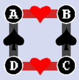
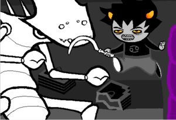

Homestuck
 De: La Frikipedia, la enciclopedia extremadamente seria.
De: La Frikipedia, la enciclopedia extremadamente seria.
De la serie Programas de TV:
La banda de autistas retrasados jugando un simple juego
| Idioma original:
|
Gringolandia
|
| Creador:
|
Un tal Andrew Pussy Hussie
|
| Duración:
|
cinco miserables viñetas por semana o mes, dependiendo lo que tarde Hussie en parar de cortarse las venas por sus fans.
|
| No. Episodios:
|
Un chilion
|
| No. Temporadas:
|
Van por la sexta temporada, contando los intermedios.
|
| ¿Aún se transmite?:
|
En Internerd
|
| Género:
|
Marihuaneramente Epico
|
| Nivel de frikismo:
|
It's over 9000!!!
|
| Películas:
|
nones nones
|
Todos los putos personajes hablan como amixers
«¡Jajajajaja! ¿Quién se pondría a ver esta mariconada? ¡Si hasta todos ahí hablan como amixers!»
~ Friki antes de ver el comic
«Jejeje, la trama es bien fumada pero esos trolls no están nada mal…»
~ El mismo Friki después de ver un par de episodios
«HUSSIE, POR QUE??»
~ El mismo Friki después de ver toda la serie y ver que Hussie trollea a los lectores con episodios fumados por semana
« Me gusta el GamKar, pero prefiero el KarEzi, aunque el DirkJake es muy tierno ¡¡y el DaveJade romántico!!»
~ Fan de Homestuck meditando sobre varias de las parejas de la serie al ver un capitulo.
«¡TU POLLA TALADRO SERÁ LA POLLA EL TALADRO QUE PENETRARÁ ATRAVESERÁ LOS CULOS CIELOS!»
~ El hermano de Dave dandole consejos sobre como ser un puto y equivocandose de serie
«Fandom, que se necesita para que una buena temporada tenga exito?»
~ Hussie preguntando al fandom antes de hacer una de sus porrocientas temporadas nuevas
«Ehhh....culos, tetas, borrachas y homosexuales?»
~ El fandom sobre lo anterior
«Esperen nomás, que yo me encargo del resto»
~ Hussie sobre lo anterior y a punto de crear a los chicos Alpha
«HoNk HoNk HoNk HoNk HoNk HoNk HoNk HoNk»
~ Gamzee sobre la serie
« J3GUS JOHN, 3STOY 1NVOC4NDO 3L NOMBR3 D3 TU J3GUS T3RR3STR3 P4R4 3XPR3S4R FRUSTR4C1ON»
~ Terezi despues de ver lo que hizo la puta de Vriska
Homestuck (Atrapados en Casa) trata de cuatro frikis antisociales: un palurdo, una emo, una zanahoria y un poser, que un día se meten a jugar un juego llamado Sburb. El susodicho juego termina causando empanadas mentales, una trama mas complicada que la de Evangelion, cosas paranormales y viajeros intertemporales, muy al estilo Haruhi. Además el bendito juego tambien está relacionado el fin del universo. A raíz de esa epifanía muchas cosas locas o absurdas ocurrirán en la vida de estos chicos, mientras conocen aliens, viajeros del tiempo y sayayines, entre ellos 12 trolls alienigenas, cuyo nivel de frikismo los supera.
Historia
Un carajito de 13 años llamado John Egbert recibe una copia de un videojuego llamado Sburb. Como buen friki, lo primero que hace es jugarlo, pero lo que no sabia es que provoca que una lluvia de meteoritos destruya su ciudad y solo el quede vivo y sea teletransportado a otro planeta. No solo el sobrevivió, sino que sus amigos (tan desadaptados como el) Dave, Rose y Jade tambien por haber jugado y activado el juego. Tras varias frikadas y seres alienigenas everywhere, descubren que al activar el juego, activaron el fin del mundo y deben terminar el juego para salvarse o que todo acabe en un Tercer Impacto a lo Evangelion.
Personajes
Anexo:Personajes de Homestuck
Pendejadas que solo se ven en esta serie
 Cuadrantes segun Homestuck
Cuadrantes
Los trolls tienen romances negros o rojos, cual simbolos de naipes. Esto causa que se deseen entre ellos y sean unos putos bisexuales (con excepciones como la lesbi Kanaya, o Vriska que es palurdosexual), aunque los humanos no se quedan atras.
- Matespritship ♥: Es cuando son pareja, obvio. Por ejemplo, varias parejas como la necrofilica y el bipolar, la tsundere y el palurdo, etc.
- Moirallegiance ♦: Es cuando son amigos, pero quieren algo mas hasta que te friendzonean. Por ejemplo cuando la glub friendzoneó al forever alone. Tambien pueden ser mejores amigos, como el fetichista y la fangirl.
- Auspisticism ♣: Es cuando alguien se mete en la relación entre dos con la excusa de "ayudarlos", aunque en el fondo quiere un menage a trois. Por ejemplo, cuando la lesbi quiso ayudar a la spiderbitch y al palurdo, pero se quedó calentona.
- Kismesissitude ♠: En resumen, se odian y se quieren matar pero tambien quieren follar y calentarse. Por ejemplo, los hermanos cherub.
Lusus
 Sana relacion lusus/padre-troll/hijo segun Homestuck
Son unos animales que son como los padres para los trolls. Pueden ser de unos dolores de cabeza, como el de Karkat, ser niñeros, como el de Equius, ser adorables y lindos pero sin nada que hacer como el de Tavros o ser super comprensivos y ayudantes como la de Kanaya. Cabe mencionar que todos se mueren por estupideces de los propios trolls (o simplemente querian quedarse huerfanos). Aparecen otra vez todos resucitados como sprites solo para morirse de nuevo y al final aparecen en el parque de Jurassic Park, dispuestos a violarse a Jake. Entre estos están:
- Crabdad: Lusus de Karkat. Un cangrejo con tan mala hostia como su dueño.
- Dragonmom: Lusus de Terezi. Es un dragón que hasta ahora no sale de su huevo, porque si salía, todos se iban a La Chingada. A pesar que nunca salió de su puto cascarón, le enseñó a Terezi a oler las cosas y en general a ser una fetichista por el rojo. Cuando por fin salió de su huevo, murió 5 segundos después.
- Spidermom: Lusus de Vriska. Una araña bien pendeja que obligaba a Vriska a matar otros trolls para comer o si no la mataba a ella. Gracias a esta pendeja, Vriska termino hecha un tsundere pendeja con un fetiche hacia los palurdos. Se muere porque un derrumbe provocado por Equius en pleno ataque fetichista le cayó encima. De modo que Vriska le tuvo que hacer eutanasia matandola con una guillotina, pero no sin antes dejar bañada a Vriska en un charco de sangre azul.
- Goatdad: Lusus de Gamzee. Es una cabra con cola de pez que, cual padre de Nelson Muntz, dejó abandonado a Gamzee, se fue a tomar agua de mar y nunca volvió. Recién regresa al lado del payaso drogadicto después de que lo mate Eridan.
- Tinkerbull: Lusus de Tavros. Es un pokemon con apariencia de toro con alas de hada (patético) que no hace nada excepto volar alrededor de Tavros como un idiota. Se muere después que el palurdo Tavros lo atropellara con su silla de ruedas.
Jake a punto de ser violado por
pokemons gays Tinkerbulls
- Mother Grub: Lusus de Kanaya. Es una larva que solo sabe poner huevos, es buena y comprensiva y la consuela cuando la friendzonean. En resumen, actúa comola típica mamá estereotipada y se muere de vieja, en vez de morirse por alguna torpeza del troll de turno.
- Seahorsedad: Lusus de Eridan. Es un caballo de mar que usa para montar y para ponerle accesorios fashion, demostrando lo pijo que es Eridan.
- Bicyclops: Lusus de Sollux. Al igual que su dueño, tiene ojos en 3-D. A Sollux le cae mal porque si, lo tiene encadenado como perro y le da de comer miel mental para tenerlo dopado y que no moleste.
- Gl'bgolyb: Lusus de Feferi. Es técnicamente Cthulhu, quien la escucha hablar se muere (preguntenle a Sollux) y se come otros lusus porque si.
- Ramma: Lusus de Aradia. Es una pinche cabra que no hace nada, excepto ver gente muerta, como su necrofilica dueña y Sollux la mata durante el incidente de la indigesta de miel mental.
- Pounce de Leon: Lusus de Nepeta. Es un nyan cat que es tan retrasada como Nepeta, pone caras estilo LOLCAT y la ayuda a buscar “la fuente de las cosas adorables”.
- Aurthour: Lusus de Equius. Es un centauro con bigote y ubres de vaca (WTF) que es el esclavo de Equius. Solo sirve para darle a Equius todos los días de tomar su propia leche y ser el saco boxeo personal de este.

|
PELIGRO
Este artículo o sección no es más que una torpe lista. Si crees que vale la pena, edítalo para mejorar su calidad y excelencia
|
Sabes que has visto demasiado Homestuck cuando...?
Moraleja de la serie: Mientras mas palurdo seas, mas locos (ya sean gordas tetonas, maricas poseros, tsunderes, yanderes, payasos fumados, etc) te quieren violar
- Haces infinitos fics de KarkatXJohn.
- Según tu, TODOS los japoneses hablan con japonés barato de Traductor Google.
- No puedes oír el nombre de un signo del Zodiaco sin recordar algo de Homestuck.
- Te sabes completo los videos Flash de la serie.
- No puedes dejar de pensar en un personaje cuando ves un títere, un gato negro, una escopeta, unas tizas, unas gafas de Kamina, un martini, un pene, unas tetas, etc.
- Nunca en tu vida te han gustado las bebidas embriagantes, pero piensas hacer una excepción respecto al martini.
- Quieres cambiarte al signo de tu troll favorito.
- Crees que si te vuelves un palurdo conseguiras que las chicas y algun otro chico esté tras tuyo; como funcionó con Jake, Tavros, John y la princesa pez.
- Te asustan las chicas de signo Escorpio y crees que todas son unas tsunderes violentas y guarras que maltratan y desean a chicos Tauro?
- No puedes leer en los horóscopos la compatibilidad entre "Cáncer y Capricornio" o "Géminis y Acuario" o "Capricornio y Tauro" sin que empieces a fantasear.
- Tratas con mucho fijador y unas gafas negras para tener el peinado de uno de los hermanos Strider.
- Los chicos chaparros con mala hostia ahora te parecen MUY atractivos.
- Ríes como un idiota ante un horóscopo.
- Tienes tu teléfono repleto de música de la serie (aunque la mierda no tenga letra).
- Si ves dos serpientes follando, crees que son Cherubs en temporada de apareamiento.
- Crees que las marcas de pasteles y dulces tienen mensajes subliminales.
- Dudas de la sexualidad de los tíos con gafas de Kamina.
- Cada vez que ves a un drogadicto piensas que debe ser Capricornio?
- Ya no puedes comer paletas rojas o verdes sin creer que subiras al Trickster Mode.
- Y si te mueres, crees que subiras al God Tier.
- Y también te sabes todos los God Tiers de los personajes.
- De repente crees que los palurdos del salón son atractivos
- Estás convencido de que los chicos Sagitario son racistas pervertidos y que les excita recibir ordenes y orgasmearse.
- Piensas que el mundo fuera mejor si fuera como Alternia o Beforus.
- Los chicos que usan lentes en 3-D te parecen atractivos.
- Tu risa es "Hoo Hoo Hoo!"
- Te hiciste alcohólico por Roxy.
- Crees que los juggalos son unos asesinos maniacos y drogadictos que sirven a una religión satánica.
- Y cada vez que ves a una fangirl te parece que es Leo?
- De repente las tizas rojas te parecen deliciosas?
- Cuando vez jugo de manzana, crees que en verdad es otra agua amarilla menos jugo?
- Terminas de leer todo este rollo y te das cuenta que mitad de las cosas te suceden a ti.
¿Sabías que...
Los trolls al leer este articulo
Finalmente se cumplió la profecía: Ahora cualquiera (hasta los alucinantes niños guay) puede ser Kamina próximamente y se empieza desde chiquito...
- Los hombres de la serie son todos unos fracasados con problemas de autoestima?
- Y que todas las mujeres son unas zorras urgidas que quieren tener pareja ya?
- Zerochan esta repleto de fanarts de Homestuck, sobre todo de los trolls?
- Hay gente que dibuja porno a masivas cantidad y generalmente es gay o envuelve un fetiche raro y horrible?
- A Rose le gusta el porno que el hermano de Dave hace?
- Y que lee porno?
- Jake es inmune a las tetas de Jane?
- No asi Dave, quien cayó embobado al ver su pechonalidad.
- Cada puto personaje representa a toda persona que pase mas de 6 horas frente a un ordenador?
- Calliope representa a las fangirls locas extremas de la serie?
- Y Caliborn a los que odian la serie?
- Los Strider tienen enfermedades venereas y fotos pornográficas online?
- Los trolls tienen tentáculos ahí abajo?
- De ahí el interés de los humanos por ellos?
- Rose se lia a
tomar por culo dar consejos a todo lo que se mueva?
- Tavros y John se metieron a un concurso de gilipollas y perdieron por gilipollas?
- Aunque Vriska los recompenso muy bien?
- Es posible ser yandere y ninfómana a la vez?
- Hussie odia a los de signo Acuario y por eso es que pone a los trolls de este signo como unos friendzoneados fracasados?
- Tavros no es mas bruto por que no se puede?
- Rufioh compite con Makoto Itou por el personaje mas puto, cabrón con suerte, semental y por tener el merito de convertir a su novia en yandere?
- Dave ha engañado repetidas veces a su hermano con John, John con Jade, Jade con Terezi, Terezi con Karkat, Karkat con el Vagabundo, etcetera?
- A Jade le gustan los Squiddles, y por lo tanto los monstruos con tentaculos?
- Eridan murio virgen?
- Sollux no?
- Que eso es mentira?
- Que las que shipean Erisol los hicieron follar innumerables veces?
- Que la glub glub es tan estúpida que a pesar de que Sollux "medio muerto" (Lol wut) estuviera con la necrofilica ella igual quería tener peces con lentes 3D?
- Las Serket siempre serán putas abusivas y manipuladoras?
- Y con una fijación por los Nitram?
- Feferi folla con Sollux al menos 5 veces antes de morir?
- Por eso es que ella estaba tan feliz al morirse y por eso era que Sollux insistia tanto en que se vayan a dormir encima de las bocinas de Gamzee?
- Kurloz y Gamzee son adoradores del Monesvol?
- Tavros es palurdo?
- Pero Jake le gana?
- Los Ampora son losers?
- Lord English es en verdad Monstruo Espagueti Volador disfrazado?
- Gamzee levantaba la industria de los sopor slimes en un 83%?
- John lucha contra Seiya por el puesto al mas prota mas gilipollas?
- Vriska es una amalgama entre Tsundere y Yandere?
- Los Captor siempre serán los putos personales de las Peixes?
- Dave es odiado por IP anónima?
- Latula es una poser, pues cree que teniendo una patineta ya la hace extrema y r4d1c4l?
- Jake es un cabrón con suerte al tener a dos chicas y un gay tras el?
- Meenah quiere ser la reina en su planeta para eliminar a todos los falsos anarkas?
- No es que Tavros llore mierda, sino que su sangre es marrón?
- Dirk se alucina Kamina y le contagió el sindrome a Dave?
- Damara es ninfómana profesional?
- Y tiene videos porno online?
- Hussie fuma marihuana y se mete tripies mientras escribe la serie?
- Que Homestuck es una orgía gay, bisexual, hetero y demas?
- La que ha escrito este artículo se ha visto toda la serie fumando marihuana para poder escribirlo?
- El fandom cree que existirá JohnxTerezi por el Update?

|
|
|
Autor(es):
- Fordus
- SakuraMiya
- Gñapero Solitario
- 4jonatica
- Likan003
- Vriska8itch
- Nepeta
- Cobalt
- DuhbCatlover
- MartiiZoel
Frikipedia 2005-2016, Licencia
GFDL 1.2 - Extraído por FrikiLeaks